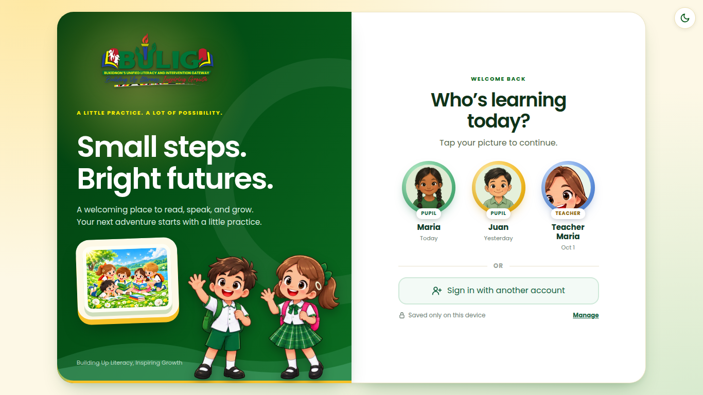
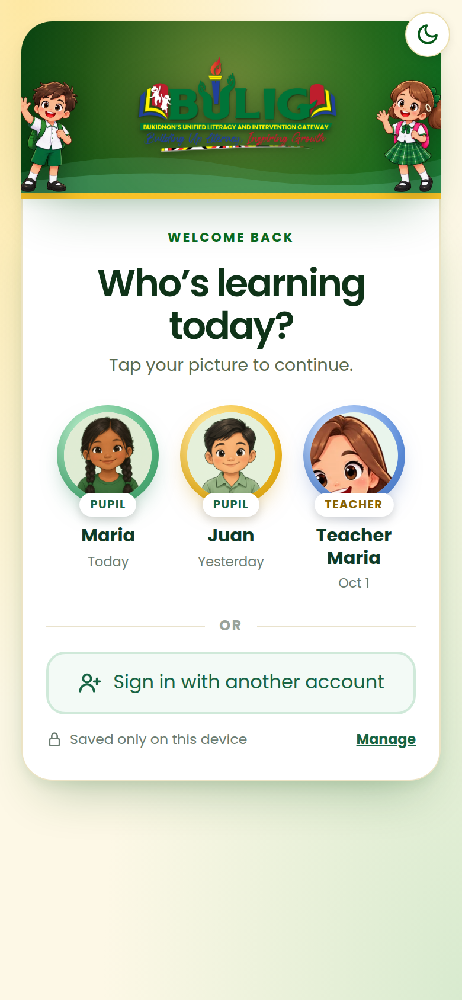
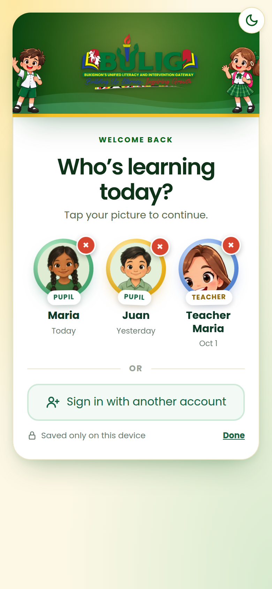
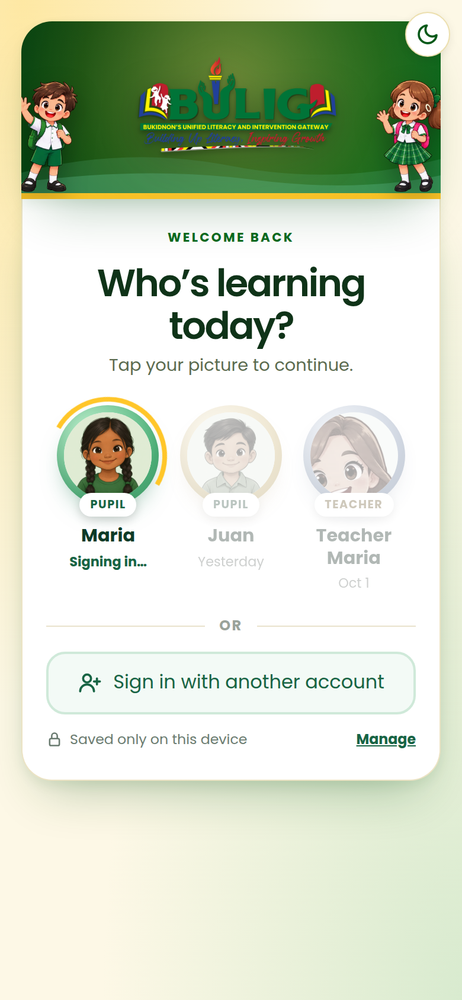
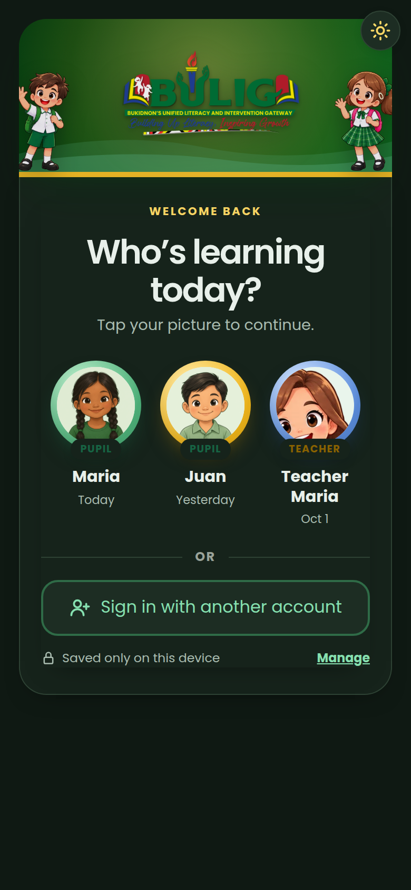
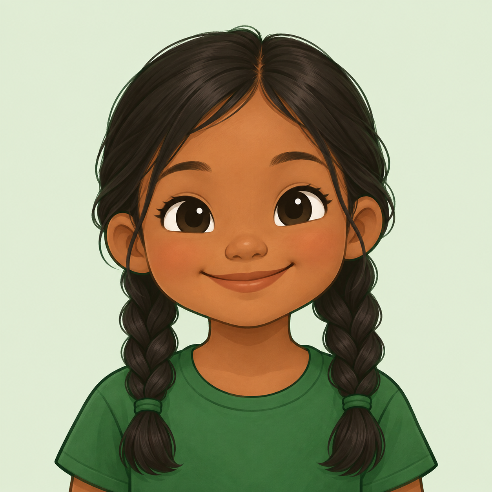

Saved accounts and friendly overlays
Three ideas on real BULIG screens. Press the green buttons to replay each animation.
1Saved accounts on the login page
After signing in, BULIG asks "Save your account on this device?". Next time, the login page shows Who's learning today? with up to 3 saved accounts (pupils and teachers). One tap on a picture signs them in. "Use another account" shows the normal form, and × removes an account from this device.


Manage makes the bubbles jiggle with a red × to remove one. Tapping a picture shows a gold spinning ring with "Signing in…" while the others fade. It also works in dark mode.




+- Slides up once, right after signing in, with the pupil's own picture popping in.
- The little dots show how many of the 3 places are used.
- "Yes, save me" adds the picture to this device's login page.
- If 3 are already saved, it asks which one to replace.
2Tapping a locked level
Instead of nothing happening, a friendly card pops up: the padlock shakes, sparks fly, and the pupil's character peeks in. It says which level to finish first and how far they are.

Level 6 is still locked
Finish Level 5 first to unlock it. You can do it!
Level 5 · 9% done
- Shows on My lessons (level cards) and on locked stops of the level map.
- "Go to Level 5" opens the level they need to finish.
- Uses the pupil's own boy or girl character.
3Signing out
Tapping Sign out asks first, with the character waving goodbye. "Stay and learn" closes the card. For saved accounts, a tick keeps the account on this device.
Leaving already, Maria?
Are you sure you want to sign out? Your work is saved.
- For pupils and teachers, on phone and computer.
- Teachers see their teacher character and "Leaving already, Teacher Maria?"
- If answers are still waiting to upload (offline), it warns them before signing out.
- BULIG never stores passwords on the device. It saves a secret sign-in key that only works on that device.
- Keys expire after 60 days without use, and stop working if the password is changed or the account is turned off.
- A teacher or admin can remove all saved sign-ins for an account from its details page.
- Administrator accounts are never saved; they always use the password and PIN.
- This needs one small database update (a new table for the sign-in keys). I will include the SQL file.